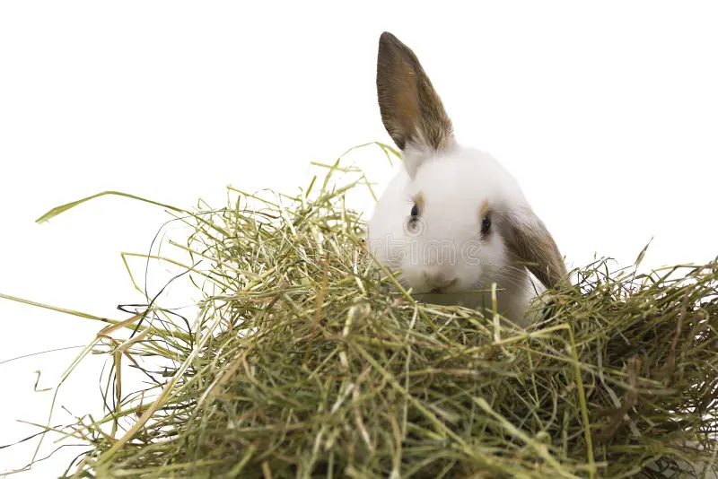
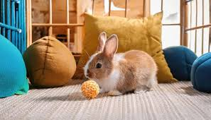
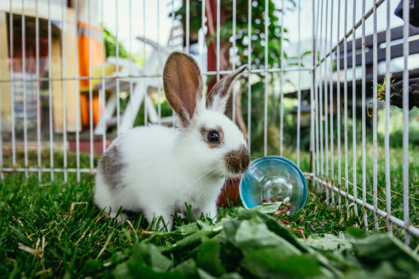
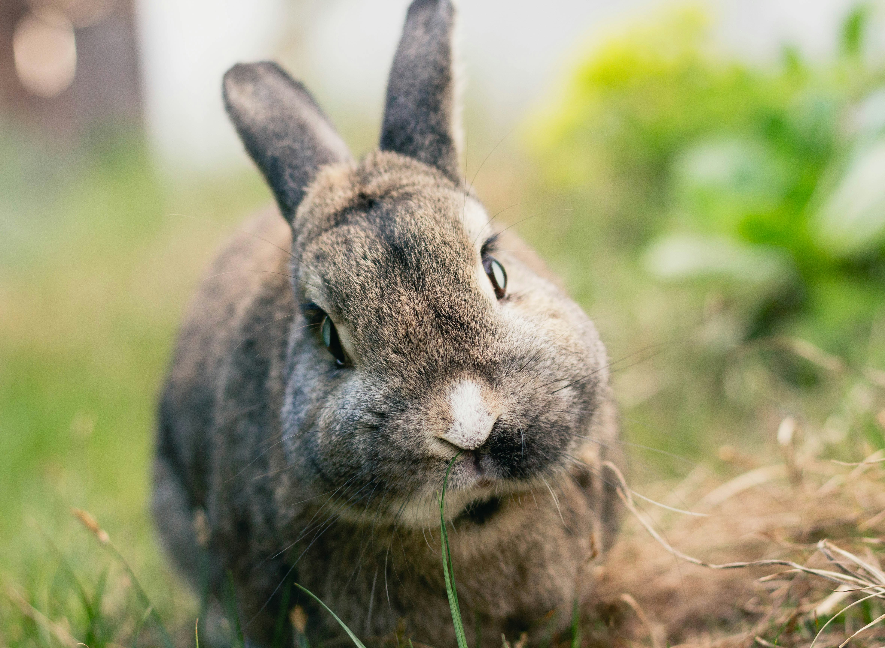
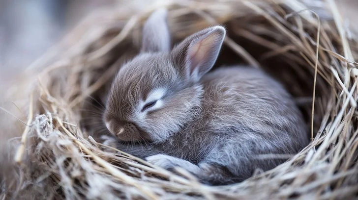
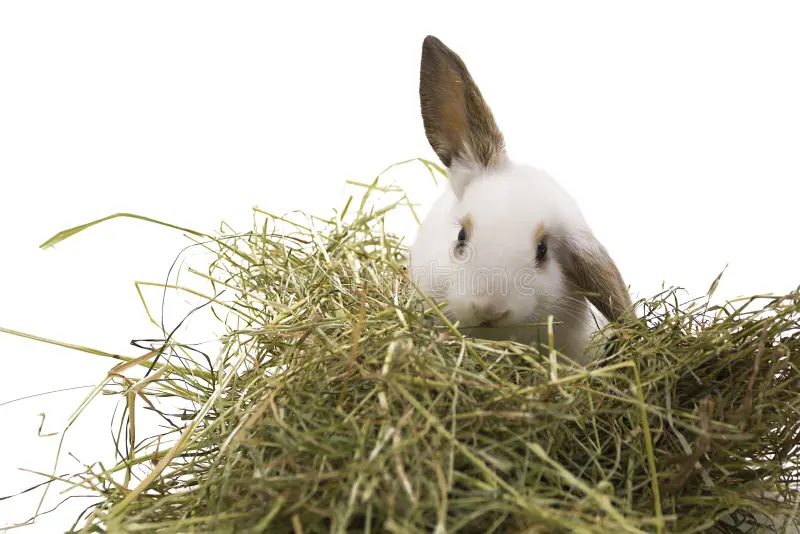
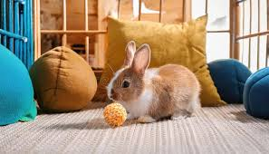
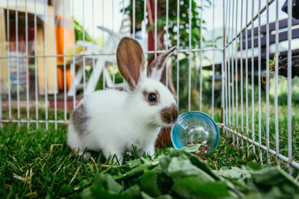
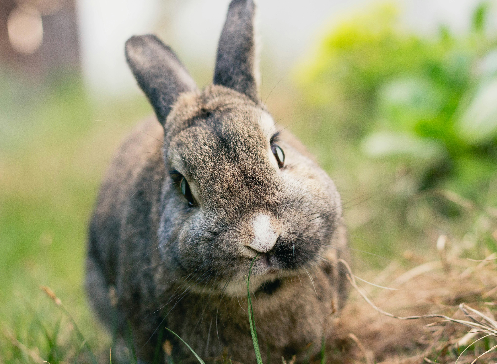
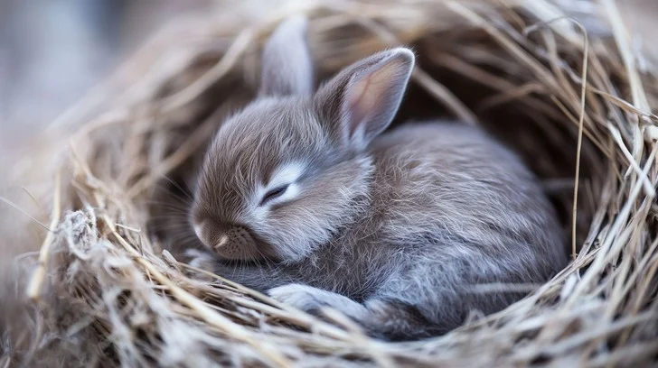

1. Basic Care
Essential daily routines and housing requirements for your rabbit
Daily Routines
- Hay: Unlimited timothy hay available 24/7
- Water: Fresh water daily in heavy ceramic bowl or sipper bottle
- Litter Box: Spot clean daily, full clean weekly
- Exercise: 4+ hours supervised free-roam daily
- Grooming: Brush 2-3 times weekly, check nails monthly
Housing Requirements
- Minimum Space: 4ft x 2ft x 2ft enclosure + free-roam time
- Indoor Only: Protected from drafts, extreme temperatures
- Hide Box: Small box for security and burrowing instinct
- Chew Toys: Untreated wood blocks, cardboard tunnels
- Rabbit-Proofing: Cords covered, baseboards protected
Essential Supplies Checklist
✓ Unlimited timothy hay
✓ Heavy ceramic food/water bowls
✓ Pellet bowl
✓ Litter box with safe litter
✓ Chew toys & tunnels
✓ Nail clippers
✓ Brush/shedding blade
✓ Carrier for vet visits
✓ Rabbit-safe hide box
✓ ID tag or microchip
 








